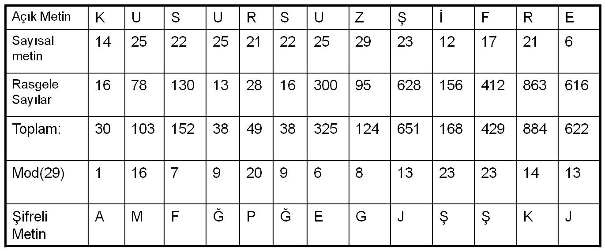
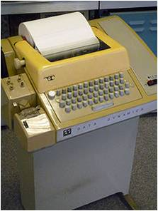

6.7.5. Tek Kullanımlık Karakter Dizisi (One-time Pad)
Bu basit şifreleme yönteminde rastgele üretilen bir karakter (harf veya rakam) dizisi kullanılarak şifreleme yapılır.
Açık mesaj içinde yer alan her karakter, üretilen dizide karşısına denk gelen karakterle işleme sokularak (Örneğin modüler toplama işlemi) şifreli mesaj elde edilir. Mesajı çözmek için rastgele dizinin bilinmesi gereklidir. Bu yönteme Vernam şifreleme yöntemi denir.
Açık Mesaj : BULUSMAYERIANKARA
Rastgele Dizi : DEFRYPLCNMLJKHFGH
Şifreli Mesaj : RLDYDOY....
C=(P+K) mod(29) işlemi Vernam şifresini tanımlar.

Bu yöntemin güvenliği rastgele üretilen diziye bağlıdır.
Bu dizi gerçekten rastgele üretilmelidir, eğer bir kurala bağlı olarak üretilirse ve bu kural saldırgan tarafından bilinirse sistem kırılabilir.
Bu tehdit dışında sistem mükemmel bir şifreleme sistemidir ve ilk olarak 1917'de bulunup "teletype" makinelerinde kullanılmıştır.

One-time pad algoritması ile şifreleme yapan örnek bir teletype cihazı.